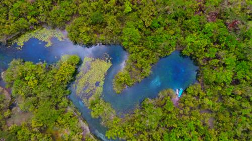
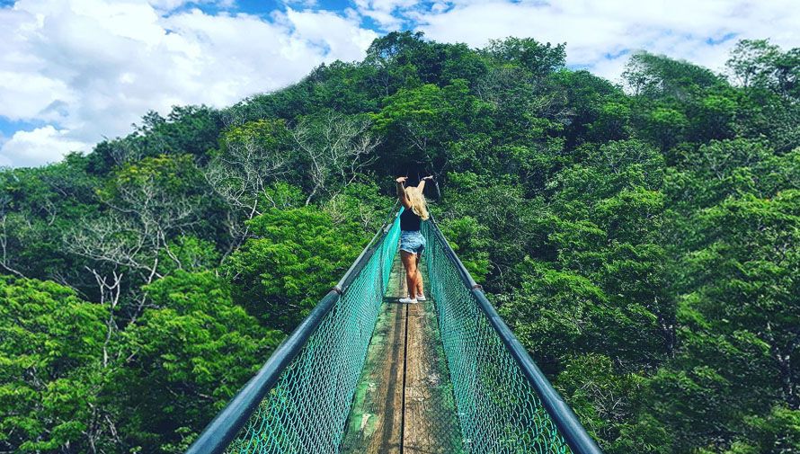
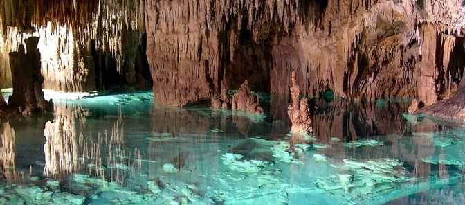
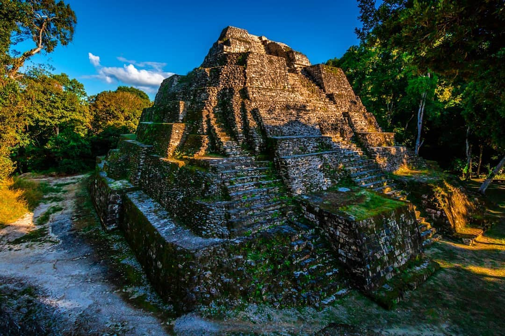
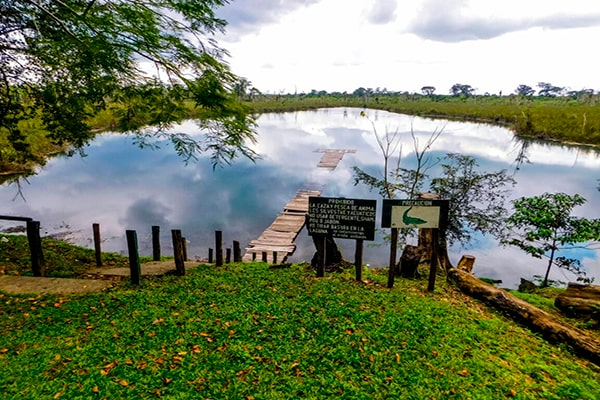

El departamento de Petén es el más grande de Guatemala, ubicado en la región norte del país. Su capital es Flores, una hermosa isla en el Lago Petén Itzá.
Petén es famoso por sus impresionantes sitios arqueológicos mayas, como Tikal, que es Patrimonio de la Humanidad y uno de los destinos turísticos más importantes del país.
El departamento de Petén es el más extenso que posee la República de Guatemala. Así mismo, tiene uno de los lagos más grandes, el cual es conocido como Petén Itzá.
Gran parte de la selva se encuentra en este territorio, así como los vestigios de la civilización maya en el país. A su jurisdicción pertenecen 14 municipios, siendo Flores su cabecera departamental.
Petén es un destino ideal para los amantes de la naturaleza y la historia, con una biodiversidad rica y paisajes impresionantes que incluyen selvas, ríos y lagos.
Ubicación:
Petén se encuentra en el norte de Guatemala, limitando al norte con México y al este con Belice. Su capital es Flores, situada en una isla en el Lago Petén Itzá.
Conoce estos lugares que debes visitar si viajas a Petén:
1 / 5

Cráter azúl
Uno de los lugares que puedes visitar es una serie de nacimientos y arroyos de aguas cristalinas: el Cráter Azul, ubicado en Las Cruces, Petén.
2 / 5

Parque Natural Ixpanpajul
El Parque Natural Ixpanpajul Se encuentra dentro de un esplendoroso bosque, es refugio natural de una amplia variedad de animales, plantas y árboles, ubicado en el Km. 468 Carretera vía Río Dulce hacia Flores, Petén.
3 / 5

Cuevas de Naj Tunich
Estas cuevas descubiertas en 1979 son un sitio que tienes que conocer, cuenta con mucha historia ubicado en el Sureste de Petén a 7 km. de la frontera con Belice.
4 / 5

Yaxhá
Yaxhá es una ciudad maya enorme con majestuosos templos, desde edificios de gobierno, plazas ceremoniales, campo de juego de pelota y observatorio astronómico ubicado en el Parque Nacional Yaxhá, Petén.
5 / 5

Parque Nacional el Rosario
El Rosario constituye un oasis de naturaleza cerca del poblado de Sayaxché, dentro del parque se encuentra la laguna, que es el atractivo más importante.